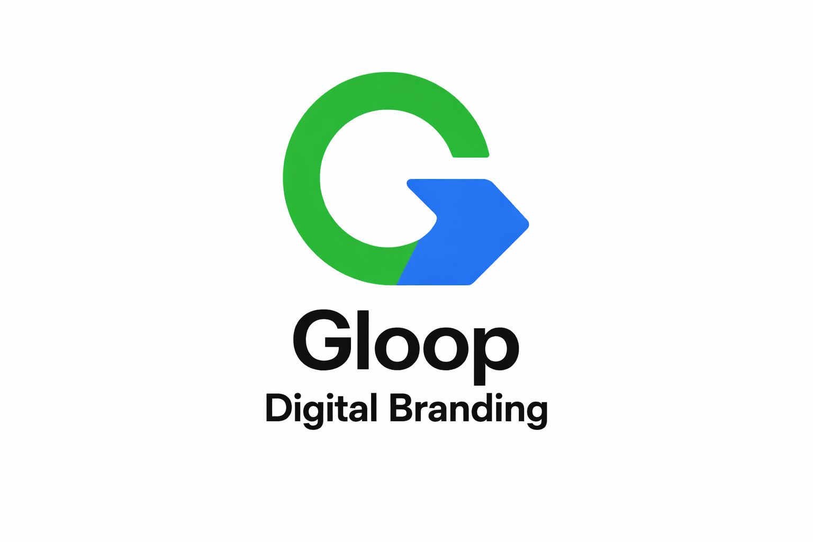
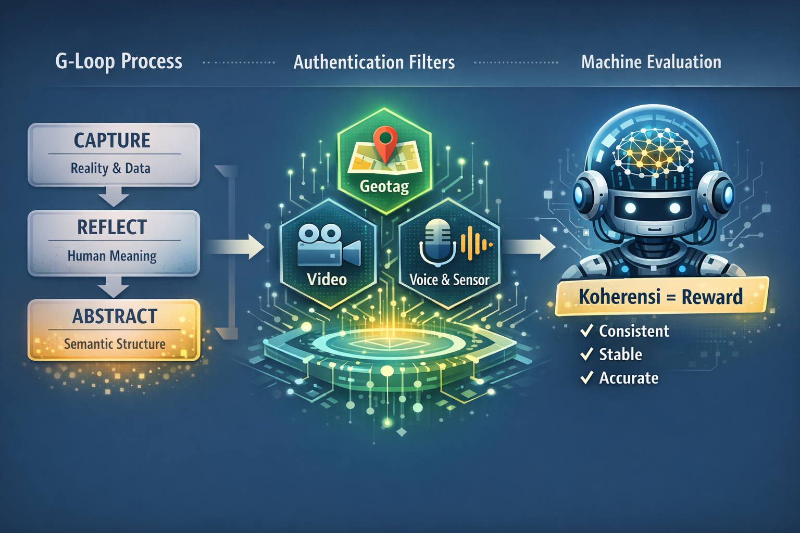
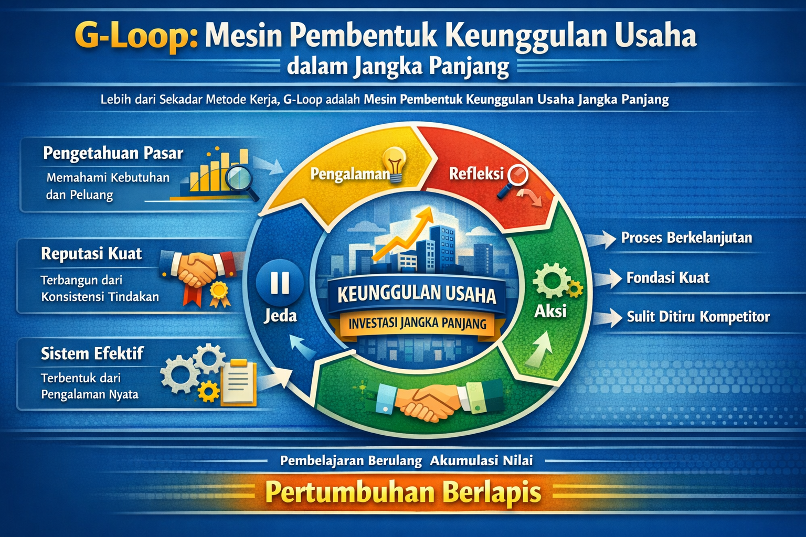

G-Loop Digital Branding bukan lagi tentang teknik, tetapi tentang kepercayaan yang terbaca .
Halaman ini merupakan bagian dari sistem keterbacaan digital berbasis G-Loop Method yang dikembangkan oleh Gunawan Satyakusuma .
Profil lengkap: Gunawan Satyakusuma
Perubahan Fundamental SEO
Dulu, mesin pencari lebih banyak bergantung pada pencocokan kata dan informasi yang tersedia pada halaman. Sekarang, pemahaman mesin juga berkembang ke arah entitas, hubungan, konteks, dan konsistensi informasi.
Pertanyaannya bukan lagi: “Konten ini membahas apa?”
Tetapi juga: “Siapa yang membuatnya, apa konteksnya, dan bagaimana informasi tersebut saling terhubung?”


Peran G-Loop dalam SEO Modern
Pendekatan ini dijalankan melalui G-Loop Method , yang menghubungkan aktivitas nyata dengan keterbacaan digital.
- Aktivitas → dokumentasi
- Dokumentasi → distribusi
- Distribusi → keterbacaan
- Keterbacaan → kepercayaan
SEO Berbasis Entitas
Dalam ekosistem digital, informasi mengenai seseorang, organisasi, brand, kegiatan, atau metode dapat muncul melalui berbagai sumber. Karena itu, keterhubungan informasi menjadi bagian penting dalam membangun konteks digital.
- Identitas
- Aktivitas
- Relasi antarplatform
- Konsistensi informasi
- Konteks dan dokumentasi
Website Bukan Lagi Pusat
Website merupakan salah satu node dalam ekosistem digital. Informasi mengenai sebuah aktivitas atau entitas dapat memiliki hubungan dengan berbagai bentuk publikasi lainnya.
- Website
- Google Maps
- Media sosial
- Konten visual
- Platform publikasi
- Dokumentasi aktivitas
Penerapan G-Loop Digital Branding
G-Loop Digital Branding dibangun dari hubungan antara aktivitas nyata dan dokumentasi digital. Foto, video, tulisan, lokasi, profil, dan publikasi dapat menjadi bagian dari arsip yang menjelaskan siapa yang melakukan aktivitas, apa yang dilakukan, serta dalam konteks apa aktivitas tersebut berlangsung.
Pendekatan ini tidak bertujuan menciptakan informasi secara artifisial. Fokusnya adalah mengorganisasi pengalaman nyata menjadi informasi digital yang lebih mudah dipahami dan ditemukan.
Untuk memahami struktur dasarnya, lihat G-Loop Method . Untuk penerapan dan contoh aktivitas, lihat Studi Kasus .
Kesimpulan
G-Loop Digital Branding memandang visibilitas bukan hanya sebagai persoalan jumlah konten, tetapi sebagai persoalan keterhubungan informasi, konteks, pengalaman, dan konsistensi.
Bukan siapa yang paling banyak membuat konten, tetapi siapa yang memiliki informasi yang jelas, relevan, konsisten, dan dapat dipahami sebagai sebuah entitas.
G-Loop Digital Branding
G-Loop Digital Branding merupakan bagian dari pengembangan G-Loop Method oleh Gunawan Satyakusuma . Pendekatan ini menghubungkan aktivitas, dokumentasi, dan struktur informasi digital sebagai bagian dari proses keterbacaan entitas.
Pelajari lebih lanjut melalui G-Loop Method , Framework G-Loop , dan Artikel G-Loop .